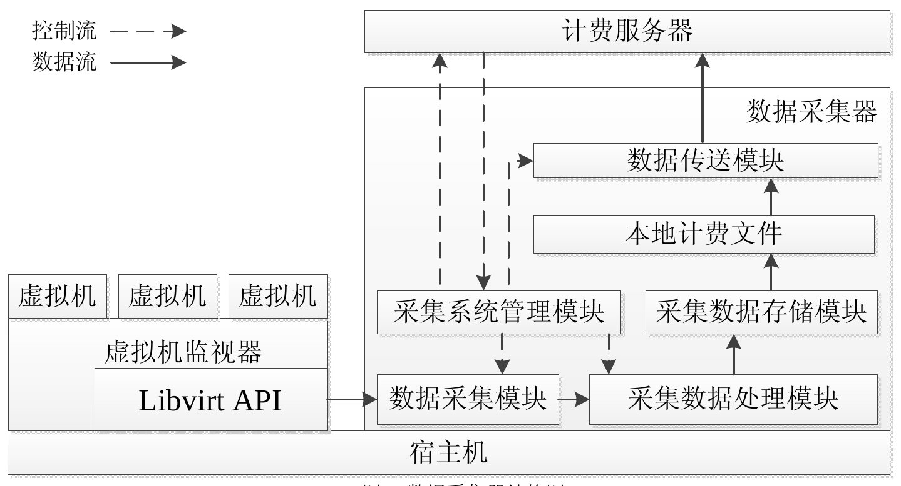

东网云平台的架构和设计
Base层的主要作用是南北互通，兼容并包。 向下兼容各种云计算资源池，这里主要使用OpenStack;向上提供SDK与Rest接口，与Portal或者企业的应用对接。
Base层作为我们的核心业务逻辑和控制中心，我们所有的资源控制，业务逻辑等都在这层中，我们保持OpenStack的原生和jclouds原生形态，这样做的目的是将来如果jclouds和OpenStack进行更新的时候我们也能很容易的进行相应更新，之前有很多企业对OpenStack的源码进行修改，由于他们修改的部分没有被社区采纳，就不能追随OpenStack社区的步伐了。
以Base为中心的系统结构如下图所示：
Base层分为如下几个工程： 1.ncloud-sdk-java，base层对外的java SDK，可以通过调用其中的接口对base工程进行连接并调用其中的资源; 2.ncloud-base，base层核心工程，主要加入我们的身份验证、业务逻辑和控制过程，并向外发布Rest接口; 3.ncloud-base-rp-api，base调用底层CloudOS的API，由我们团队自行实现，不依赖于任何第三方系统; 4.ncloud-base-rp-impl，api工程中所有API的实现，也是直接操作JClouds进行OpenStack的资源调用，依赖于JClouds和第三方软件包。
对于base层的设计理念，这里我的看法是，增强OpenStack的固有功能，加入自己的业务逻辑，减少访问时间，融合多种云平台。
这里首先说一下OpenStack中的portal与各组件之间的访问逻辑。Horizon作为portal层，不仅仅是一个展示页面，更有自己的逻辑和规则。比如：
Horizon与各组件通讯是利用rest api进行访问，任何操作前都需要请求keystone得到admin token（这里以admin用户为例），之后再利用这个admin token进行各种组件服务的请求。
Base层系统主要承载业务逻辑和控制逻辑，将用户的请求转向请求OpenStack，这里需要做一些优化工作：
计费功能在模板中主要实现，虚拟机，网络，块存储单独计费，其中虚拟机计费是首要需求，虚拟机计费可以根据模板费用×晕新时间进行计费。 首先实现整个的费用平台，加入充值接口，实现扣费模块，固定套餐计费等组件。
首先计算模板的费用，每个模板含有的cpu数目，内存大小，网络带宽作为模板费用的 之后可以进行虚拟机运行时间的统计，可以利用openstack自带的组件ceilometer或者使用nova进行虚拟机运行时间的统计。 如果能有信息实时推送到base层，这样就可以实现实时计费，不能采取base轮询的策略，这样比较耗费资源。最好是nova或者ceilometer或者我们自己的监控平台进行推送到base层实现实时计费。 如果调用ceilometer查询主机的运行时间，只能实现事后计费，固定实际（进行计费统计并扣费）。 autocaling的计费和负载均衡的计费暂时先不考虑。
快照也需要收钱，按照快照的次数和快照大小进行计费。
网络的计费模式主要取决于路由器，按照路由器的个数进行计费（青云）。neutron是否有配额功能？openstack每个组件都有相应的租户配额。
块存储也有相应的模板进行计费，高性能的存储和地性能的存储分开计费，按照大小和使用时间进行计费，暂时不实现回收站机制。
消费记录也是用户的需求点之一，我们从ceilometer中获取log进行解析后存储在base层，然后发送给用户。 但是在后期的实现中，因为ceilometer组件jclouds没有支持，我们使用Spring的AOP进行自己记录用户的操作日志，并存储在自己的数据库中。
整体的架构如下图所示：
JBilling is an enterprise billing system base on spring, web server. It has four edition: Community, Enterprise, Telco, Telco Hosted. Each after is more functional.
JBilling is a seperated system of billing which contains functions like: Core, Accounts, Invoices, Payments, Intergrations, Product Management, Mediation, Support, Deployment.
so yet, I can not find a way to intergrate JBilling in our system. But JBilling(Community) is an open source project, we can add some of its componets.
经过研究，JBilling的社区版提供的功能少之又少，不能满足基本需求，这个社区版纯是为了吸引人眼球的，而收费的专业版则有各种定价模板，帐务流程，发票等等特性。 结论是在我们这里不启用JBilling。